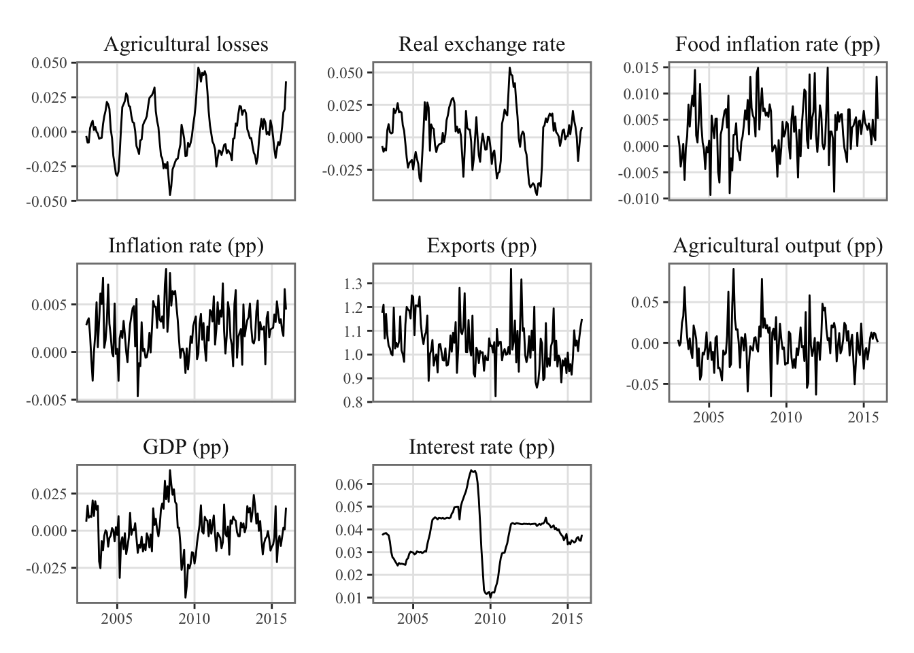

Then, we follow a methodology consisting of several key steps.
17.1.1 Step 1: Weather Shock Contribution
The first step involves estimating the contribution of weather shocks at each time period (\(t\)) for the chosen crop (\(c\)) and time horizon (\(h\)). This contribution is determined by considering the weather variables, temperature (\(T_{i,t}\)) and precipitation (\(P_{i,t}\)), and their respective coefficients (\(\beta_{c,h}^{T}\) as well as \(\beta_{c,h}^{P}\)). The weather shock contribution (\(\Gamma_{c,i,t,h}\)) is obtained by multiplying these coefficients with the corresponding weather variables and summing them up:
This first step is performed, using two user-defined functions: weather_contrib_crop_h() which computes the contribution of the weather for a single crop and time horizon, and with contrib_weather_crop() which uses the former to compute the contribution of the weather for a single crop, for all horizons. We will consider 9 horizons:
#' Computes the contribution of the weather for a single crop and time horizon#'#' @param lp_crop LP for a specific crop#' @param h horizon (single value)#' @param weather_variables vector of names of the weather variables#' @param ic_conf confidence interval used to determine whether a shock has a#' significant effect (default to .95)weather_contrib_crop_h <-function(lp_crop, h, weather_variables,ic_conf = .95) {# The data data_lp <- lp_crop$data_lp data_lp <- data_lp[[which(names(data_lp) == h)]] |>select(region_id, date, product_eng, !!weather_variables) |>ungroup()# The coefficients lp_coefs <- lp_crop$coefs |>filter(horizon ==!!h, name %in%!!weather_variables) |>mutate(value_lb = value -qnorm(1- ((1- ic_conf) /2)) * std,value_ub = value +qnorm(1- ((1- ic_conf) /2)) * std )# Keeping the values lp_coefs_value <- lp_coefs$value# The lower and upper bounds lp_coefs_value_lb <- lp_coefs$value_lb lp_coefs_value_ub <- lp_coefs$value_ub data_lp |>nest(.by =c(date, region_id)) |>mutate(contribution =map(.x = data,.f =~as.matrix(.x[, weather_variables]) %*% lp_coefs_value |>sum() ),contribution_lb =map(.x = data,.f =~as.matrix(.x[, weather_variables]) %*% lp_coefs_value_lb |>sum() ),contribution_ub =map(.x = data,.f =~as.matrix(.x[, weather_variables]) %*% lp_coefs_value_ub |>sum() ) ) |>unnest(cols =c(contribution, contribution_lb, contribution_ub)) |>select(-data) |>mutate(significant = (contribution_lb >0& contribution_ub >0) | (contribution_lb <0& contribution_ub <0),significant =as.numeric(significant) ) |>mutate(date = date + lubridate::period(str_c(!!h, " month")))}
#' Computes the contribution of the weather for a single crop, for all horizons#'#' @param lp_crop LP for a specific crop#' @param weather_variables vector of names of the weather variables#' @param horizons vector of horizons. If `NULL`, uses all horizons in lp_cropcontrib_weather_crop <-function(lp_crop, weather_variables,horizons =NULL) {if (is.null(horizons)) horizons <-unique(lp_crop$coefs$horizon)map(.x = horizons,.f =~weather_contrib_crop_h(lp_crop = lp_crop, h = .x, weather_variables = weather_variables ) |>mutate(horizon = .x) ) |>list_rbind() |># group_by(date) |> # summarise(value = sum(contribution)) |> mutate(crop = lp_crop$crop_name) |>mutate(contribution_signif = contribution * significant)}
Let us compute the \(\Gamma_{c,i,t,h}\) for each crop, region, date and horizon:
Let us add the monthly regional selling prices of the crops (df$Value_prices), as well as the average crop-specific prices computed earlier on the whole sample (average_price_crops$price_crop) which will be used as a weight when we will aggregate all crops.
For each crop and date \(t\), we define some weights for the regional observations using the data observed at horizon \(h=0\), as the sum of the monthly agricultural production over the regions considered in the analysis. The monthly production is expressed in monetary terms, by multiplying the quantities (y_new, i.e., \(y^{raw}\)) by unit price (price_crop, i.e., \(p_c\)).
17.1.3 Step 3: Crop-Specific Weather-Adjusted Agricultural Production
For each crop \(c\), at each date \(t\), we compute the weather-adjusted agricultural production, \(y_{c,t}^{\omega}\), as the sum of the significant crop-specific contributions of the weather to the agricultural production. The crop-specific contribution across regions is first aggregated at the national level, using an average of the crop and region-specific contribution of the weather to the monetary equivalence of the agricultural production.
where \(\text{card(I)}\) is the number of regions that produce crop \(c\) at time \(t\). The characteristic function \(\mathbb{1}_{\text{signif}_{c,it,h}}\) is equal to 1 when the contribution is significantly different from 0 (using the 95% confidence intervals of the coefficients \(\beta_{c,h}^{T}\) and \(\beta_{c,h}^{P}\)), and is equal to 0 otherwise.
weather_adjusted_ag <- weather_measure_crop |># each group: observations across regions, for a crop x date x horizongroup_by(crop, date, horizon, price_crop) |># weather-adjusted agricultural production at each horizon# y_{c,t,h}^{w}summarise(y_w =sum(price_crop * contribution_signif * y_new /n(), na.rm =TRUE),.groups ="drop" ) |>group_by(crop, date) |># weather-adjusted agricultural production summed over horizons# y_{c,t}^{w}summarise(y_w =sum(y_w),.groups ="drop" )
17.1.4 Step 4: Aggregation at the National Level
Then, we aggregate the crop-specific weather-adjusted agricultural production at the national level using the following formula: \[y_{t}^{\omega} = \frac{\sum_{c} y_{c,t}^{\omega}}{\sum_{c}\omega_{c,t}},\]
where \(\omega_{c,t}\) are the quantity weights computed in the second step.
In the second step in the creation of the synthetic measure of the weater, we computed quantity weights \(\omega_{c,t}\), which correspond to the agricultural production in month \(t\) for crop \(t\), expressed in monetary terms. Let us aggregate these values across crops to obtain a monthly agricultural production: \[y_t^{A} = \sum_{c}\omega_{c,t}\]
We then express these as percentage deviation from their trend computed using the HP filter.
The vector of endogenous variables in the estimation, denoted as \(Y_t\), consists of eight variables: \(W_t\), \(RER_t\), \(\pi_t^{a}\), \(\pi_{t}\) , \(X_t\), \(y^A_t\), \(y_t\), and \(r_t\):
\(W_t\) represents the aggregate measure of weather-driven agricultural losses defined in Section 17.1, which quantifies the loss in agricultural value added due to weather shocks, expressed as a deviation from its trend. It is the focal variable of interest in this analysis.
\(RER_t\) denotes the Real Exchange Rate (RER), which reflects the relative value of the domestic currency against a basket of foreign currencies.
\(\pi^a_t\) corresponds to the percentage change of the Food Consumer Price Index (CPIA), which serves as a measure of food inflation.
\(\pi_t\) corresponds to the percentage change of the Consumer Price Index (CPI), which serves as a measure of inflation.
\(X_t\) denotes Exports.
\(y^A_t\) is the Agricultural production.
\(y_t\) represents the Gross Domestic Product (GDP), which serves as a measure of the overall economic activity and output in the country.
\(r_t\) is the nominal rate.
To construct the vectors \(Y_t\), we use data from the Central Reserve Bank of Perú.
The Real Exchange Rate (RER) data are obtained using the token PN01259PM, the Food Consumer Price Index (CPIA) data with token PN01336PM, the Consumer Price Index (CPI) data with token PN01270PM, the Exports data with token PN01461BM, the GDP data with token PN01773AM, the agricultural GDP with token PN01755AM, and the nominal rate with token PN07819NM.
Let us load the dataset of macroeconomic variables (see Chapter 3 for details on the construction of these variables).
load("../data/output/macro/df_macro.rda")
17.4 Merging the Data
The sample period for our analysis covers the time span from January 2003 (2003M1) to December 2015 (2015M12). This period provides a comprehensive view of the relationship between weather-driven agricultural losses and the selected economic indicators in Peru.
Let us divide the all the values (except exports) by 100:
df_var <- df_var |> labelled::set_variable_labels(w ="Agricultural losses",q ="Agricultural output (pp)" ) |>mutate(w = w /100, rer_dt_sa = rer_dt_sa /100, pi = pi /100, pia = pia /100, # xq = q /100, y = y /100, r = r /100 )
Figure Figure 17.1 displays the time series data for the variables included in the vector \(Y\).
ggplot(data = df_var |>filter(date >="2003-01-01") |>select(date, w, rer_dt_sa, pia, pi, x, q, y, r) |>pivot_longer(cols =-date) |>mutate(name =factor( name,levels = variable_names,labels =names(variable_names) ) ),mapping =aes(x = date, y = value) ) +geom_line() +facet_wrap(~name, scales ="free_y") +theme_paper() +labs(x =NULL, y =NULL)

Figure 17.1: Time Series of Endogenous Variables for Vector Autoregression (VAR) Analysis in Peru (2003-2015)
Before proceeding to the estimation, there is one final step, which involves converting the data into the ts format.
start_date <-"2003-01-01"df_var_ts <- df_var |>filter(date >= start_date) |>select( w, rer_dt_sa, pia, pi, x, q, y, r ) |>ts(start =c(year(start_date), month(start_date)), freq =12)
17.5 VAR Estimation
We estimate a VAR(p) model with a constant term but no trend. Let us look how many lags we should use, using the automatic selection method provided by the VARselect() function from {vars}.
info_var_estim <- vars::VARselect(y = df_var_ts, type ="const", lag.max =6)info_var_estim
[,1] [,2] [,3] [,4] [,5] [,6] [,7] [,8]
[1,] 1 0 0 0 0 0 0 0
[2,] NA 1 0 0 0 0 0 0
[3,] NA NA 1 0 0 0 0 0
[4,] NA NA NA 1 0 0 0 0
[5,] NA NA NA NA 1 0 0 0
[6,] NA NA NA NA NA 1 0 0
[7,] NA NA NA NA NA NA 1 0
[8,] NA NA NA NA NA NA NA 1
svar_a <- vars::SVAR(var_l1, Amat = a, max.iter =1000)
Warning in vars::SVAR(var_l1, Amat = a, max.iter = 1000): Convergence not
achieved after 1000 iterations. Convergence value: 6.81032508658627e-05 .
The matrix of the estimated coefficients:
svar_a$A
w rer_dt_sa pia pi x q
w 1.00000000 0.00000000 0.00000000 0.00000000 0.000000000 0.000000000
rer_dt_sa 0.10443238 1.00000000 0.00000000 0.00000000 0.000000000 0.000000000
pia 0.09576007 0.09535393 1.00000000 0.00000000 0.000000000 0.000000000
pi 0.09565631 0.09347590 0.08923415 1.00000000 0.000000000 0.000000000
x 0.09077617 0.12705693 0.12991314 0.12808971 1.000000000 0.000000000
q 0.07624405 0.07291027 0.08563015 0.08710426 0.042308911 1.000000000
y 0.07910663 0.06949304 0.07726102 0.07790653 0.006098028 0.005853906
r 0.07799215 0.07468340 0.07802918 0.08026269 0.004230866 0.047414317
y r
w 0.00000000 0
rer_dt_sa 0.00000000 0
pia 0.00000000 0
pi 0.00000000 0
x 0.00000000 0
q 0.00000000 0
y 1.00000000 0
r 0.07505698 1
Figure 17.3: VAR(2) system response to one standard deviation orthogonal shock to the weather aggregate cost equation. The gray bands depict the 68% confidence intervals.
17.6 Comparison between PISCOp and CHIRPS data
We can plot the IRFs obtained using either the PISCOp rainfall data or the CHIRPS rainfall data.
Figure 17.5: System response to one standard deviation orthogonal shock to the weather aggregate cost equation. Estimations made with local projections.
Figure 17.6: System response to one standard deviation orthogonal shock to the weather aggregate cost equation. Estimations made with local projections. The gray bands depict the 68% confidence intervals.